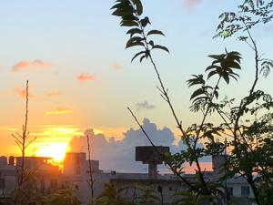

うるがいの話 ある日
最新: ヘラヘラオバさん
うるがいとは 前提知識です
カニの画像をクリックすると『うるがいの話』サイトを表示します
うるがい(ｳﾙｶﾞｲ urugai)とは、『もずくがに』の名前でとても大きくなります。
たながー（ﾀﾅｶﾞｰtanagaa）とは手長えびのことで、何種類かあり大きいのは車 エビぐらいになります。
ぶながー(bunagaa)とは、赤い髪の毛、赤い身体、そして身長は１ｍ２０ｃｍ ぐらい、川の蟹を食べているの目撃された。場所は沖縄県国頭郡大宜味村のと ある村僕の隣近所に住んでいる爺さんから、聞いた話です。
2021年09月10日 (金）
ヘラヘラオバさん
16:02

近所に山姥のような少し怖いオバさんがいて、地元で有名で『ヘラヘラオバさ
ん』と呼ばれていた。数か月前から姿が見えなくなった、コロナにやらてたか
も、見た目は年寄りに見えるが以外と若いかもしれない７０歳には届かない筈
いつものジョギングコースで出会う、上半身裸で筋肉モリモリのマッチョの７
０代を超えるジーサンも姿を見なくなった。数年年上かなと思う男女の夫婦ら
しきジョガーも、数か月前から会わなくなった。皆、何処へ行ったのだろう。
スマホのヤフーメールの受信一覧がおかしな動きをしてする、ん！、メールを
消さないからかとフと考え、昨日の夜から受信フォルダにある数年前のメール
をひたすら削除して、今日の昼頃、整理終える。ついでに新規にフォルダを設
け、残すべき神秘学の受信メールを振り分ける設定を行う。受信一覧の表示は
快適？になった（筈）。なんで今までやらなかったのだろう、と。実は職場で
大量に発生するメールの整理で苦労していた。退職時には何の未練もなく全て
一括削除した、あるときメールの整理ってやるのだろうかと思っていたら、当
時の役員が定期的に削除しているよ！と言われたことがあり、ほぉーさすがと
どうでもいい事に関心した。数日前から、暑さが戻ってきた今日この頃、クラ
ーをなるべくつけず頑張っている。